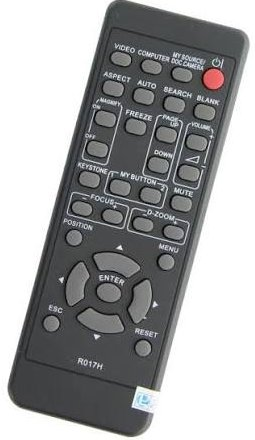

Tìm sự cố theo thời điểm gặp trong lớp, chạm vào để xem các bước; làm lần lượt từ trên xuống, sau mỗi bước đợi vài giây rồi kiểm tra lại. Máy chiếu treo trên cao – chỉ thao tác trên remote, đầu cáp HDMI ở bàn giảng viên, công tắc điện của phòng và laptop.
Chưa chọn hãng – gõ số phòng ở trang chủ hoặc nhìn màu remote (đen: Hitachi · trắng mỏng dẹp: Sony · trắng dày: Infoto). Không chọn vẫn xem được toàn bộ hướng dẫn.

Hitachi · remote màu đen (R017H) · 9 phòng.
Nút cần nhớ: ⏻ đỏ (góc trên phải) bật, tắt · VIDEO nhấn vài lần đến khi hiện HDMI, hoặc SEARCH tự dò · BLANK, FREEZE dễ bấm nhầm → màn đen, đứng hình. Sơ đồ remote →
Các bước bên dưới vẫn áp dụng; tên nút có thể hơi khác: POWER bật, tắt · SOURCE / INPUT chọn HDMI · AV MUTE / BLANK, FREEZE dễ bấm nhầm → màn đen, đứng hình.
Chọn sự cố đang gặp
🔴Lúc bật máy chiếu
Dấu hiệu nhận biết
Nhấn nút nguồn trên remote (⏻ đỏ Hitachi · I/⏻ xanh lá Sony · ON/STAND-BY đỏ Infoto – đều ở góc trên phải) nhưng máy im lặng: không đèn báo, không tiếng quạt.
Hoặc đèn báo cam/đỏ đang sáng nhưng nhấn Power vẫn không lên hình.
Các bước thử (từ dễ → khó)
Kiểm tra điện của phòng. Bật công tắc / cầu dao (aptomat) của phòng và công tắc riêng của máy chiếu trên tường nếu có (thường cạnh bảng hoặc gần bàn giảng viên). Đèn, quạt phòng cũng không chạy → phòng mất điện, báo bảo vệ / giáo vụ.
Nhìn đèn báo rồi mới nhấn. Đèn cam/đỏ sáng ổn định = máy đang chờ → nhấn Power 1 lần, đợi 30–60 giây cho hình sáng dần. Đèn đang nhấp nháy = máy đang khởi động hoặc làm mát (vừa tắt) → đợi 1–2 phút rồi thử lại.
Nhấn cho đúng cách. Đứng gần bên dưới máy, chĩa remote thẳng lên máy chiếu, nhấn giữ Power 1–2 giây. Vẫn không phản ứng → có thể remote hết pin → xem mục 2.
⚠️ KHÔNG NÊN làm
Nhấn Power dồn dập nhiều lần – máy sẽ khóa hoặc đợi lâu hơn.
Tắt cầu dao / công tắc khi máy đang chạy hoặc đang làm mát (dễ hỏng bóng đèn).
🛑 Dừng lại và gọi IT khi
Điện phòng bình thường (đèn, quạt vẫn chạy) mà máy chiếu không có đèn báo nào – có thể lỏng dây nguồn trên máy, chỉ IT kiểm tra được.
Đèn báo sáng đỏ hoặc nhấp nháy đỏ-cam mà không lên hình → xem mục 8.
Nhấn remote máy không phản ứng; phải nhấn nhiều lần; chỉ ăn khi đứng rất gần.
Các bước thử (từ dễ → khó)
Hướng đúng chỗ. Đứng gần bên dưới máy, chĩa remote thẳng lên máy chiếu (hoặc vào màn chiếu để tín hiệu dội lại), nhấn dứt khoát 1 lần rồi đợi 1 giây. Gỡ vật cản (người đứng chắn, rèm, nắp laptop); đứng cách máy dưới 5–7 m.
Soi pin bằng camera điện thoại. Mở camera, chĩa vào đầu remote rồi nhấn nút: thấy đèn nhấp nháy tím/trắng là còn pin (lỗi do hướng, khoảng cách); không thấy gì → pin đã hết.
Thay pin dự phòng. Pin để sẵn tại phòng nước giảng viên – thầy cô sang lấy và tự thay, không cần chờ IT. Mang pin cũ theo để lấy đúng cỡ (AAA/AA); thay cả 2 viên, lắp đúng cực +/−.
Giảm nhiễu sáng. Nắng hoặc đèn huỳnh quang chiếu thẳng vào mắt nhận trên máy → kéo rèm, tắt đèn gần máy.
Không có remote thay thế (nút trên thân máy ở trên cao, không với được). Máy đã bật và đúng HDMI → cứ dạy tiếp, điều khiển slide bằng laptop. Máy chưa bật hoặc sai nguồn → gọi IT (IT có remote dự phòng).
⚠️ KHÔNG NÊN làm
Dùng lẫn pin cũ và pin mới; đập, gõ remote.
Mang remote đi phòng khác hoặc đổi remote giữa các phòng.
🛑 Dừng lại và gọi IT khi
Đã thay pin mới mà remote vẫn không hoạt động; remote bị mất hoặc hỏng.
Pin dự phòng ở phòng nước giảng viên đã hết – báo để IT bổ sung.
Máy chiếu đã sáng nhưng hiện No Signal, No Input, Searching…, Không có tín hiệu; hoặc màn xanh / màn đen chỉ có logo hãng.
Laptop "không biết" có máy chiếu: Win + P không tác dụng, Display settings chỉ thấy 1 màn hình.
Các bước thử (từ dễ → khó)
Cắm lại chặt cáp HDMI ở bàn giảng viên: đầu ở laptop và đầu ở ổ HDMI trên tường / hộp nối trên bàn (nếu là đầu cắm rời). Dùng adapter (MacBook, laptop mỏng) → cắm chặt cả adapter. Đầu phía máy chiếu ở trên cao – bỏ qua.
Chọn đúng nguồn trên máy chiếu:Hitachi nhấn VIDEO vài lần (mỗi lần đợi 2–3 giây) đến khi góc màn hình hiện HDMI, hoặc nhấn SEARCH để máy tự dò · Sony nhấn INPUT → chọn dòng INPUT B hoặc C có chữ HDMI → ENTER · Infoto nhấn thẳng nút HDMI · hãng khác: Source / Input → HDMI. Máy có 2 cổng HDMI: chưa có hình → thử cổng còn lại; ổ trên tường/bàn có ghi số cổng thì chọn theo số đó.
Bảo laptop xuất hình: Windows nhấn Win + P → Duplicate. macOS: System Settings → Displays → Mirror. Đợi 5–10 giây sau mỗi thao tác – laptop và máy chiếu cần thời gian "bắt tay".
Rút cáp HDMI khỏi laptop, đợi 5 giây, cắm lại. Thử cổng HDMI khác trên laptop hoặc adapter khác (nếu có).
Bắt laptop dò lại màn hình. Windows: Settings (Win + I) → System → Display → Multiple displays → Detect; hoặc nhấn Win + Ctrl + Shift + B (màn hình chớp 1 giây, có tiếng bíp – bình thường). macOS: Displays → giữ Option → Detect Displays. Một số laptop cần Fn + phím có hình 2 màn hình (F4/F5/F7/F8).
Thử laptop khác (mượn của sinh viên / đồng nghiệp) để khoanh vùng: laptop khác lên hình → lỗi ở laptop của bạn, dùng tạm máy khác để dạy (xem thêm trang Kết nối laptop); cũng không lên → lỗi cáp hoặc máy chiếu → gọi IT.
Khởi động lại laptop trong khi vẫn cắm cáp HDMI và máy chiếu đang ở nguồn HDMI.
⚠️ KHÔNG NÊN làm
Giật mạnh dây, bẻ gập đầu cáp; ép đầu HDMI khi thấy cứng – đầu cắm chỉ vào theo một chiều.
Tải và cài driver hay phần mềm lạ ngay tại lớp.
Đổi các cài đặt sâu trong Menu máy chiếu (HDMI mode, EDID, Reset…).
🛑 Dừng lại và gọi IT khi
Laptop khác cắm vào cũng báo No Signal (cáp hoặc máy chiếu hỏng).
Đầu cáp HDMI trên bàn bị gãy, lỏng, méo, không cắm chặt được.
Đã thử 5 phút không xong → chuyển phương án dạy tạm và báo IT.
Hình méo dạng hình thang (trên to dưới nhỏ hoặc ngược lại).
Hình lệch khỏi màn chiếu, bị cắt mất mép hoặc có viền đen hai bên.
Các bước thử (từ dễ → khó)
Hình mờ → kiểm tra độ phân giải laptop trước. Chữ nhòe đều toàn màn thường do laptop xuất độ phân giải không khớp. Windows: chuột phải màn hình nền → Display settings → Display resolution → chọn mục có chữ (Recommended); vẫn xấu → thử 1920 × 1080 hoặc 1280 × 800. macOS: System Settings → Displays → Default for display.
Lấy nét (Focus) – chỉ khi remote có nút FOCUS +/− (remote Hitachi có; Sony, Infoto không). Nhấn từng nấc đến khi chữ ở giữa màn rõ nhất; nhấn không thấy đổi → vòng lấy nét nằm trên ống kính ở trên cao, chỉ IT chỉnh được.
Méo hình thang → KEYSTONE. Nhấn nút KEYSTONE trên remote (cả 3 hãng đều có), chỉnh bằng mũi tên ▲▼ đến khi hình vuông vắn. Một số máy có Auto Keystone trong Menu → Setup.
Tràn / thiếu hình, viền đen → tỉ lệ khung hình. Nhấn ASPECT (Hitachi, Sony) hoặc SCREEN (Infoto) → chọn Normal / Auto; vẫn sai thử 16:9 hoặc 4:3 cho khớp màn chiếu.
Lỡ bấm phóng to một vùng (MAGNIFY trên Hitachi, D ZOOM / D.ZOOM trên Sony, Infoto): nhấn MAGNIFY OFF hoặc nhấn − / ▼ vài lần để về bình thường.
Chữ quá nhỏ: dùng Win + P → Duplicate (thay vì Extend); phóng to nội dung bằng Ctrl + lăn chuột (Word, PowerPoint) hoặc Ctrl + + (trình duyệt).
⚠️ KHÔNG NÊN làm
Xoay, đẩy, dịch chuyển thân máy hoặc giá treo; với tay lau ống kính.
Lưu các thay đổi sâu trong Menu (Reset, Advanced…) nếu không rõ.
🛑 Dừng lại và gọi IT khi
Hình lệch hẳn khỏi màn chiếu (máy hoặc giá treo bị xô lệch) – không tự chỉnh được.
Đã đổi độ phân giải mà toàn bộ hình vẫn mờ, hoặc mờ một góc cố định (cần chỉnh Focus / lau ống kính trên máy).
Có đốm, vệt cố định trên hình dù đổi laptop (bụi bẩn bên trong máy).
Toàn bộ hình ám xanh lá, hồng, tím hoặc vàng; màu trắng không còn trắng.
Sọc ngang/dọc, lấm tấm nhiễu, hình chớp giật hoặc mất hình từng lúc.
Các bước thử (từ dễ → khó)
Cắm lại chặt đầu HDMI ở laptop (và ở ổ trên tường/bàn nếu là đầu cắm rời). Cáp lỏng là nguyên nhân số 1 gây ám màu và sọc.
Lay nhẹ đầu cáp ở laptop: màu thay đổi theo → cáp hoặc cổng bị lỏng/hỏng → đổi cáp HDMI hoặc adapter khác (nếu có).
Kiểm tra chế độ hình ảnh trên máy chiếu:Infoto nhấn nút IMAGE trên remote; Hitachi / Sony vào MENU → Picture → Picture Mode → chọn Standard, Normal hoặc Presentation. Nếu ai đó đã chọn Blackboard, Whiteboard, Cinema… hình sẽ có màu lạ.
Kiểm tra laptop: màn laptop cũng ám vàng → tắt Night light (Windows) / Night Shift (macOS).
Nhiễu sọc kèm rung hình: tách cáp HDMI ra xa dây điện và củ sạc; thử rút sạc laptop (hoặc cắm sạc nếu đang chạy pin).
⚠️ KHÔNG NÊN làm
Chỉnh sâu RGB / Gain / Offset / Color Temperature trong Menu rồi lưu lại – ảnh hưởng người dạy sau.
Uốn cong, kẹp cáp HDMI dưới chân bàn để "ép" cho tiếp xúc.
🛑 Dừng lại và gọi IT khi
Đã đổi cáp và laptop khác mà vẫn ám màu (bộ phận tạo màu / bóng đèn của máy có vấn đề).
Có vệt màu, đốm sáng hoặc đốm đen cố định ở cùng vị trí dù đổi nguồn.
Chọn đúng kiểu lắp: máy chiếu của trường đều treo trần (Infoto: treo trên bảng), chiếu từ phía trước → chọn Front / Ceiling (Trần – trước). Chỉ chọn Rear khi chiếu từ sau màn (hiếm gặp).
Thoát Menu. Vẫn sai → thử lần lượt 4 tổ hợp Front/Rear × Desktop/Ceiling đến khi chữ đọc đúng chiều.
⚠️ KHÔNG NÊN làm
Chọn Reset All / Factory Reset.
Đổi ngôn ngữ Menu. Nếu lỡ đổi: tìm mục có biểu tượng 🌐 hoặc chữ Language để chọn lại.
🛑 Dừng lại và gọi IT khi
Menu bị khóa (Key lock) hoặc không tìm thấy mục cài đặt.
Đèn báo xanh, quạt chạy, nhưng màn chiếu đen hoàn toàn (không có cả chữ No Signal).
Hình đứng yên không đổi dù trên laptop đã chuyển slide.
Nguyên nhân hay gặp nhất: lỡ nhấn nút BLANK (Hitachi, Sony) / NO SHOW (Infoto) / AV MUTE (hãng khác) làm màn đen, hoặc FREEZE làm đứng hình. Các nút này nằm ở nửa dưới remote, gần nhau.
Các bước thử (từ dễ → khó)
Nhấn lại nút BLANK / NO SHOW / AV MUTE (màn đen) hoặc FREEZE (đứng hình) trên remote một lần để tắt chế độ đó. Nhấn từng nút, đợi 2 giây.
Nhấn MENU để "đánh thức" máy khỏi chế độ tiết kiệm điện, rồi nhấn MENU lần nữa để thoát.
Đánh thức laptop: di chuột / nhấn phím bất kỳ. Trước giờ dạy nên tăng thời gian tắt màn hình: Windows → Settings → System → Power → Screen timeout.
Nhấn Win + P → chọn lại Duplicate. Hình vẫn đứng yên → rút cáp HDMI, đợi 5 giây, cắm lại.
Vẫn đen → chọn lại đúng cổng HDMI (Hitachi: VIDEO/SEARCH · Sony: INPUT · Infoto: HDMI); nếu lúc này hiện No Signal → làm theo mục 3.
⚠️ KHÔNG NÊN làm
Tắt cầu dao / công tắc điện phòng vì tưởng máy hỏng.
Nhấn dồn dập nhiều nút trên remote – dễ bật thêm chế độ khác.
🛑 Dừng lại và gọi IT khi
Đã bỏ BLANK/NO SHOW/FREEZE, chọn lại HDMI, cắm lại cáp mà vẫn đen.
Đèn báo chuyển sang đỏ hoặc nhấp nháy đỏ-cam → xem mục 8.
Máy đang chạy bỗng tắt; quạt kêu to bất thường; hình tối dần.
Đèn TEMP / LAMP / STATUS sáng đỏ hoặc nhấp nháy đỏ-cam.
Màn hình hiện cảnh báo như High temperature, Check the air flow, Replace lamp, Clean filter.
Các bước thử (từ dễ → khó)
Dừng sử dụng, tắt máy đúng cách: nhấn Power trên remote (xác nhận nếu máy hỏi), để quạt làm mát chạy đến khi tự ngừng (1–3 phút). Không tắt cầu dao / công tắc điện ngay.
Để máy nguội 10 phút. Phòng quá nóng → bật điều hòa / quạt.
Đối chiếu đèn báo theo hãng: Hitachi · Sony · Infoto. Đèn đỏ nhấp nháy thường là lỗi nhiệt độ hoặc bóng đèn → cần IT.
Chỉ khi phòng đã mát và đèn báo trở lại bình thường (cam/đỏ sáng ổn định – đang chờ): bật lại một lần để dạy tạm. Máy tắt lần nữa → dừng hẳn.
Chuyển phương án dự phòng (bảng, TV, phòng khác, gửi tài liệu cho lớp) và báo IT.
⚠️ KHÔNG NÊN làm
Bật lại nhiều lần khi máy vừa tự tắt.
Tự vệ sinh lọc bụi hay kiểm tra bóng đèn – bóng đèn rất nóng, áp suất cao, có thể nổ; việc này do IT làm.
🛑 Dừng lại và gọi IT khi
Ngay lập tức nếu có mùi khét, khói, tiếng nổ nhỏ.
Máy tự tắt lần thứ 2, hoặc đèn đỏ vẫn sáng / nhấp nháy sau khi để nguội.
Có thông báo về bóng đèn (Lamp) hoặc lọc bụi (Filter) – cần bảo trì định kỳ.
mùi khét, khói, tia lửa; máy chiếu bị rơi, va đập, giá treo lung lay, dây điện hở; đèn báo đỏ sáng liên tục hoặc nhấp nháy mà không lên hình; hoặc đã thử theo hướng dẫn 3–5 phút mà không được.